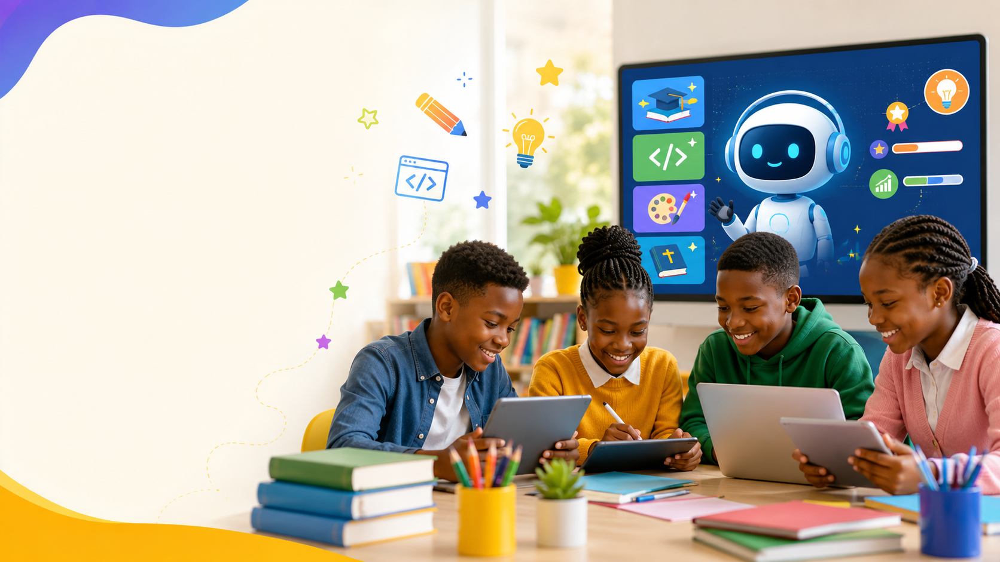
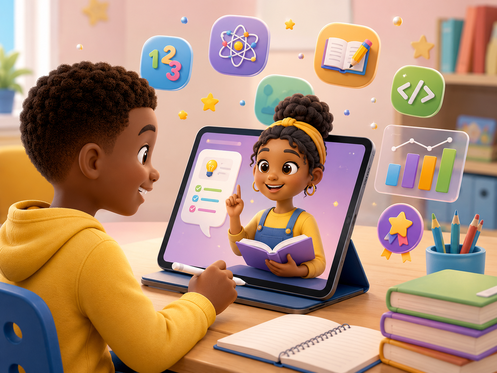
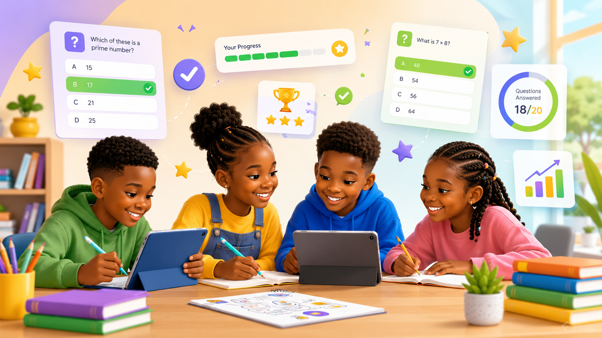
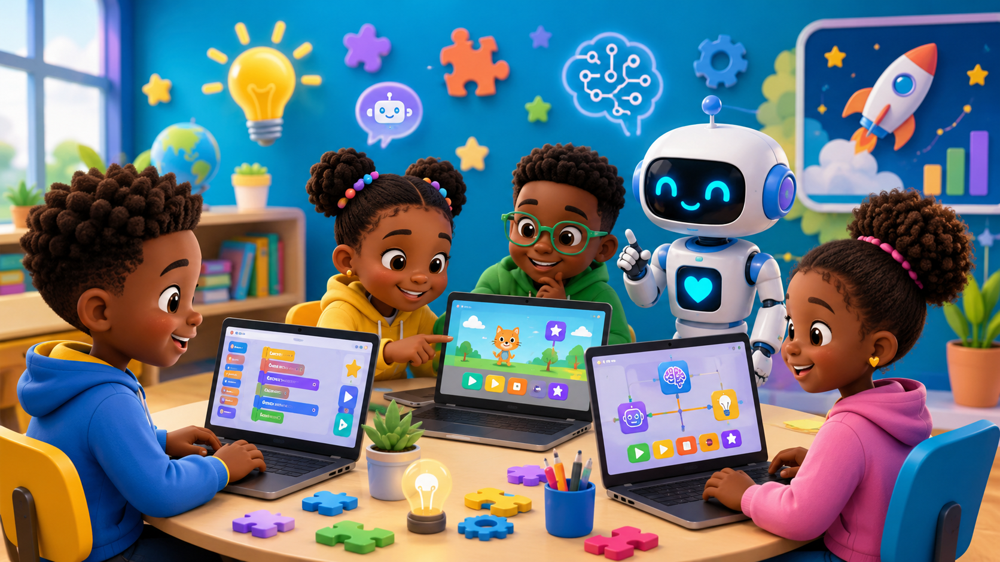
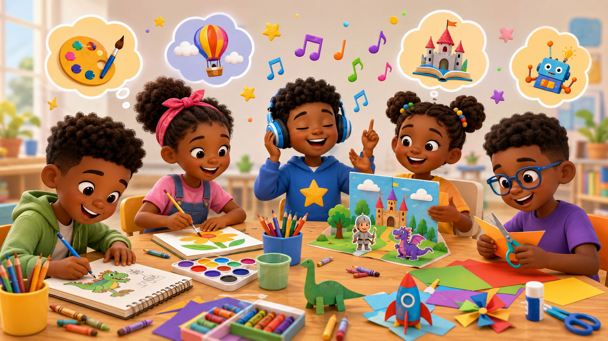
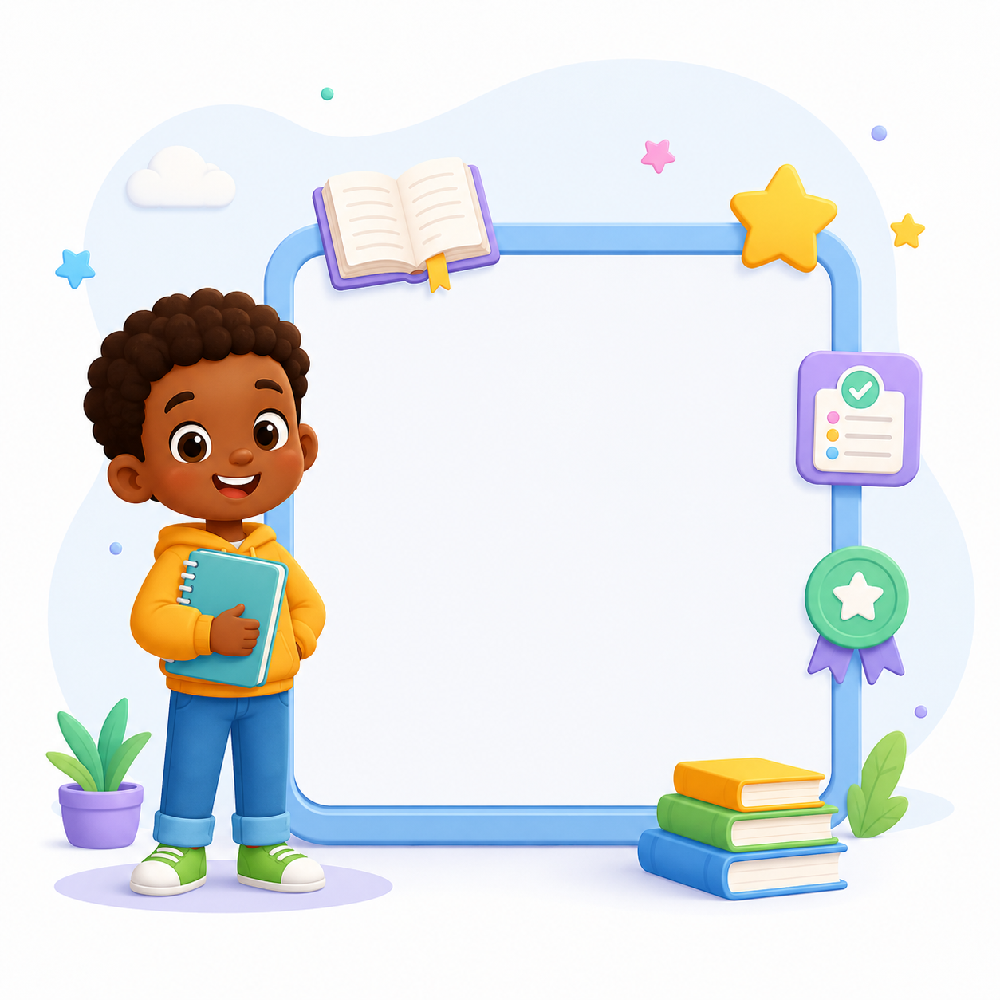
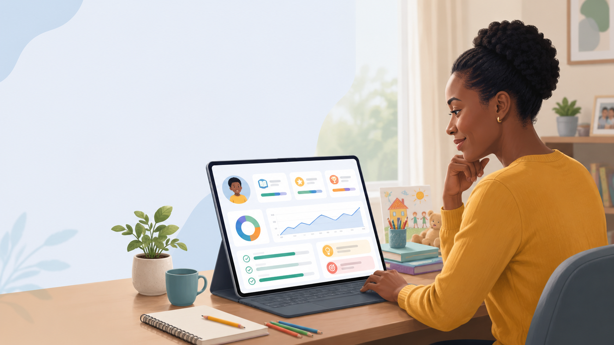
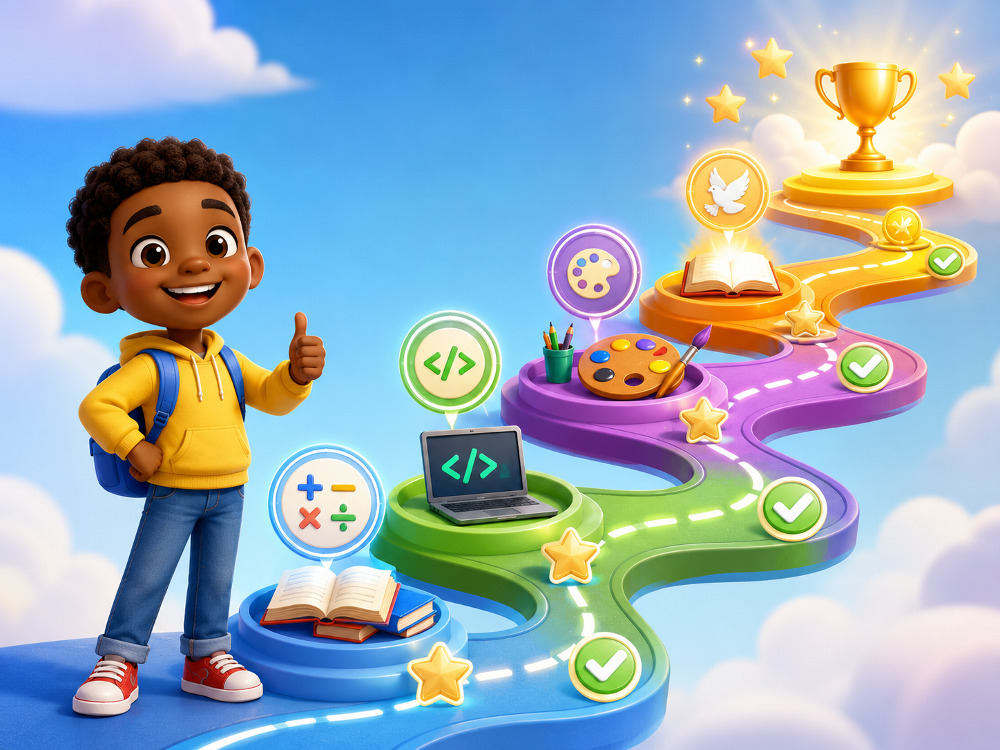

Parent-guided learning
Learning for School. Skills for Life.
A parent-guided learning platform that helps Kenyan children revise CBC schoolwork, build coding and AI skills, explore creativity, and grow in values — all in one safe family learning space.
Built for children. Controlled by parents.
CBC support
Coding & AI
Creativity
Parent progress
School support
CBC revision with practice, feedback, and parent review.
Whole-child growth
Skills, creativity, values, and progress in one weekly learning journey.

CBC Revision
Parent Progress
Coding & AI
Creative Growth
Product preview
See the kind of parent-guided learning experience families can grow into.
Before opening the app, parents should immediately understand that this is more than revision — it is a structured, weekly learning journey.
Fractions
Review with guided practice and one short explanation.
Practice 5 questions
Keep the activity short, calm, and focused.
Build a simple sequence
Use a child-friendly challenge to connect logic and digital skills.
Pending
Encourage the learner, review the attempt, and choose the recommended next step.
More than revision
Support schoolwork, digital skills, creativity, and character.
Digital Kids Assistant brings CBC revision, Coding & AI, creativity activities, and values-based learning into one parent-guided weekly journey.
CBC revision and weak-area support
Coding, AI, hobbies, and creativity
Parent-guided progress and next steps

Today’s Activity
Parent Review

Learn
CBC revision support
CBC revision, practice questions, assignments, and weak-area support.

Build
Future-ready skills
Coding, AI basics, digital safety, and future-ready skills.

Create
Creativity and hobbies
Music, drawing, creativity, imagination, and talent discovery.
Grow
Values and character
Values, Bible lessons, reflection, kindness, and character.

Personalized learning
Learning that follows your child’s journey.
The goal is not just more questions. The goal is better learning direction based on grade, topic, weak areas, and current progress.
Grade-based activities
Keep learning support appropriate to the child’s level.
Topic-based learning
Focus on the school topic or skill that needs attention now.
Weak-area recommendations
Help parents know what to review instead of guessing what comes next.
Parent action plan
Translate progress into a practical next step for home support.
Parent-guided learning
Designed as a weekly family learning routine.
Parents stay close to the learning journey while the platform prepares activities, tracks progress, and suggests the next best step.

Parent-guided progress
Next step recommended
Create learner profile
Start with a safe, parent-controlled learner account.
Child completes activity
Revision, coding, creativity, and values activities happen in one place.
Parent reviews and encourages
See support areas and respond with guidance, not guesswork.
Progress updates
Track a weekly learning journey across schoolwork and life-building skills.
Next activity is recommended
Know what your child needs next without starting from scratch.
Learner experience
Simple, guided spaces children can return to every week.
The learner side stays focused and calm so children can participate safely without seeing parent-only screens.
My Revision
Practice schoolwork with age-friendly support.
Coding & AI Fun
Explore digital skills in a friendly way.
Bible Lessons
Reflect on values and character with calm guidance.
Hobbies & Creativity
Build imagination, talent, and confidence.
My Progress
See growth across more than marks.
Parent dashboard preview
Know what your child needs next.
The parent dashboard is built as an action plan, helping families move from information to support.
Weekly learning journey
Open Learning App
Today’s learning plan
Fractions revision, one coding activity, and one values reflection.
Weak areas
Spot support needs before frustration grows.
Recommended next action
See the next guided step for the week.
Recent activity
Track what happened today across modules.
Completed activities
See what your child has finished with confidence.
Learning consistency
Understand rhythm, not just isolated scores.
Revision performance
Focus school support where it matters most.
Recommended next step
Keep the next activity short, calm, and specific.
Parent role
Review progress, encourage effort, and guide the next move.
Whole-child progress
Academics
Digital skills
Creativity
Values
Participation
Track more than marks.
Digital Kids Assistant gives parents a wider view of growth across schoolwork, digital skills, creativity, values, and participation.
CBC support, revision, and guided feedback.
Coding, AI basics, and future-ready exposure.
Music, hobbies, imagination, and expression.
Character, reflection, kindness, and faith-based guidance.
Completion, rhythm, and continued parent-guided growth.

Safety and trust
Built for children. Controlled by parents.
The platform is designed to feel safe, structured, and family-first for a small pilot environment.
Parent-controlled learner accounts
Children are brought in by parents, not public self-signup.
Learner-safe pages
Learners stay inside child-friendly learning views.
Role-based access
Parents, learners, and admins see different surfaces.
No public learner profiles
Learner information remains inside the family learning space.
Admin oversight for pilot
The pilot can be monitored without exposing password hashes.
Family-first learning design
The product is built for guidance, rhythm, encouragement, and trust.
Join the pilot
Join the Family Learning Pilot
We are inviting a small group of parents with Grade 5–7 learners to test a safer, more balanced way to support learning at home.
More than revision
Parent-guided learning
Whole-child growth